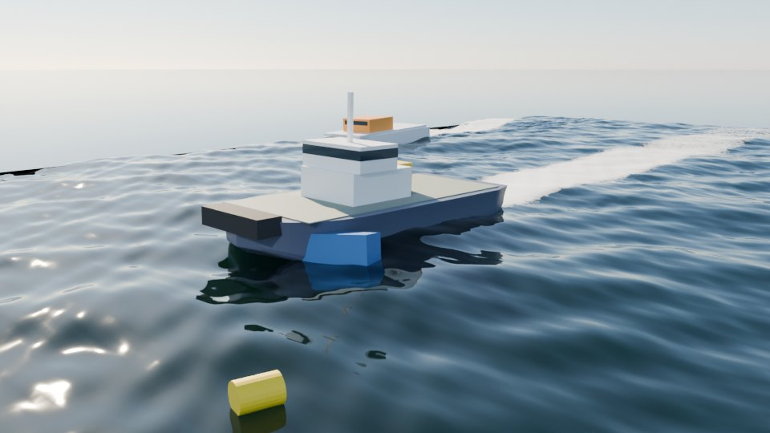
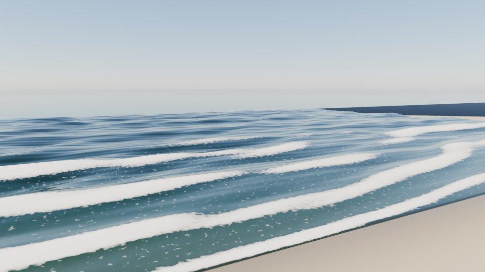
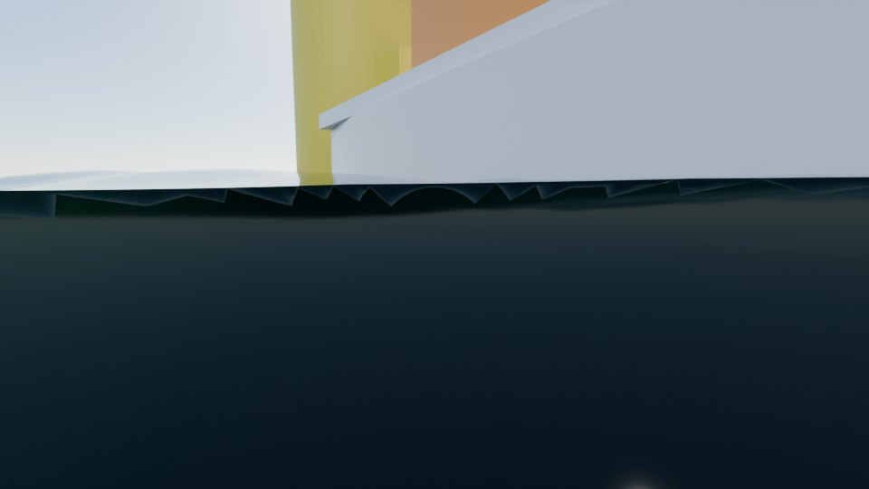
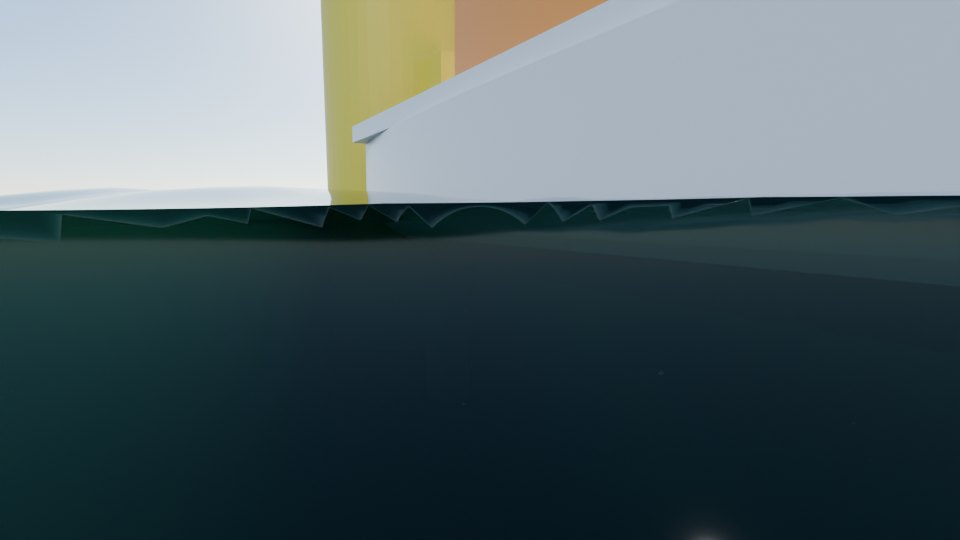
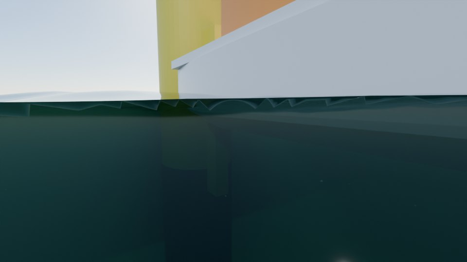
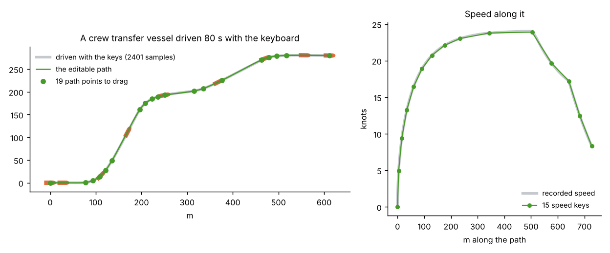
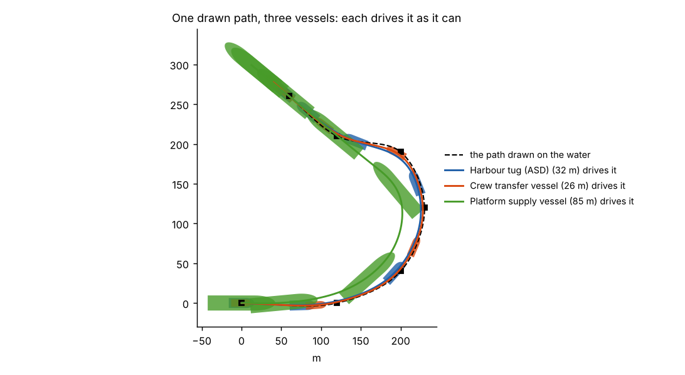
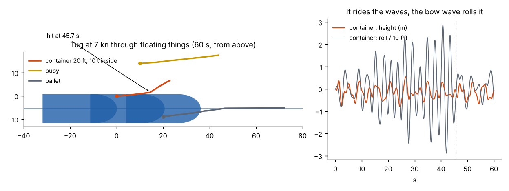
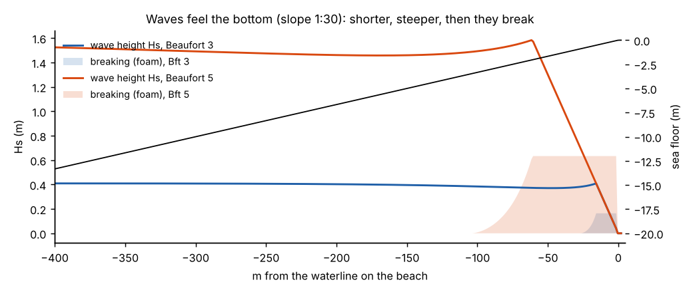

Vessels on the sea (study 0312)
1 · Prototype pictures and clips
Blender 5.2.3 (as a Python module) with Cycles on the processor, web machine (4 cores, no graphics card). The sea here is the
prototype's own grid moved by the app's own waves (core/sea.py, Beaufort 4, Hs 1.0 m) – not the app's sea mesh and shader.
Vessels, container and buoy are invented boxes at real size. Clips: 640 × 360, 12 frames a second.





What the pictures do not show yet (open points): light shafts and moving light patterns under water, spray at the bow, the water running up the sand, bubbles. The foam texture and the water colour are the prototype's, not tuned to the app's sea.
2 · Where we stand today (A)
| What | Today | What it cannot do |
|---|---|---|
| The sea (0109) | 28 travelling waves from a wind spectrum, deep water, one place for all formulas; a fine sea mesh round the model, coarse rings to the horizon | No depth: waves do not slow, grow or break near a shore. The fine area stays round the model – a vessel that sails 700 m away leaves it. |
| Vessel motion (0085) | Heave, pitch, roll of one vessel at the scene's middle, as sine curves Blender plays itself (scripts off) | A vessel that travels or turns: the waves it meets change all the time, sine curves no longer fit – it must be worked out at Build. Only one rig. |
| Vessel at work (0154) | Still / Ahead / DP / Turn: propellers, steer joints, a straight wake and Kelvin wedge drawn in the water shader, thruster jets | The vessel does not move – the water and the seabed slide past. No curved wake. One vessel, at most 6 thrusters. |
| Floating things | Deck objects ride with the vessel (Child Of) | Nothing else floats; nothing drifts; nothing can be hit (the clash check reports, it does not push). |
| Paths | Camera paths (0087: a smooth curve through points, even speed), people's walk paths (0157) | No vessel paths, no driving, no recorder. |
| Under water | Seabed, the cut-away box and its clarity (0081, 0148); the web page's camera can dive (0143) | In the app's own renders a camera under the surface sees no water (the sea is a surface, not a body of water). |
3 · What the prototype measured
Vessel kinds put on a hull (B)
| Kind | Length × beam (m) | Speed (kn) | Turns | Roll period | Waterline measured on the invented hull |
|---|---|---|---|---|---|
| RIB / fast rescue boat | 9 × 3.2 | 40 | 3 lengths | 2.5 s | draught 0.32 m, block 0.50 |
| Crew transfer vessel (catamaran) | 26 × 9.5 | 26 | 3.5 lengths, spins 12°/s | 3.5 s | draught 1.37 m, block 0.36 |
| Harbour tug (ASD) | 32 × 12.5 | 13 | 1.6 lengths, spins 15°/s, sideways 3 kn | 7 s | draught 2.88 m, block 0.68 |
| Multicat / workboat | 26 × 12 | 10 | 2.5 lengths | 6 s | draught 2.19 m |
| Platform supply vessel (DP2) | 85 × 19 | 14 | 3.5 lengths | 10 s | draught 5.35 m, block 0.72 |
| Cable-lay / construction (the public ship's class) | 124 × 28 | 12 | 4 lengths | 11 s (as today) | draught 6.14 m |
| Barge under tow | 90 × 27 | (towed) | – | 8 s | draught 2.41 m |
| Jack-up in transit | 130 × 50 | 9 | 4 lengths | 12 s | draught 4.21 m |
| Yacht for scale | 12 × 4 | 8 | 3 lengths | 3.5 s | draught 0.42 m (no keel fin) |
Typical numbers for invented vessels – the user changes them. The waterline is found from the hull's shape and the preset's weight (0.8–1.8 s per hull in plain Python; Blender's own ray casting will be faster). The roll period cannot be read from a CAD model (it needs the centre of gravity), so it comes from the preset; a rule of thumb (IMO) only warns: it gave a believable centre of gravity for the tug and the supply vessel (88–94 % of the depth) and none for catamarans, barges, jack-ups and small boats – the rule is not made for them.
Driving and paths (C)


The vessel model costs 0.1 ms per second of driving – driving live is limited by how fast the 3D view draws the sea, not by the vessel (not measured on a graphics card). Keys in the prototype: Up/Down = throttle lever (stays where set), Left/Right = helm while held, Q/E = slide sideways, A/D = turn on the spot, Space = stop and hold, Shift = fine. A crew transfer vessel pushing its bow fender onto a turbine's boat landing: its bow goes up and down 0.4 m at Beaufort 3, 1.5 m at Beaufort 4 and 2.7 m at Beaufort 5 (the sea alone, no vessel response) – the app could warn when a push-on would slip.
Anything floats and can be hit (E)

| Thing | Floats? | Draught by formula | Draught solved |
|---|---|---|---|
| 20 ft container, empty (2.3 t) | yes | 0.15 m | 0.15 m |
| 20 ft container, 10 t inside | yes | 0.81 m | 0.80 m |
| 20 ft container, 30 t inside | yes, barely | 2.13 m | 2.21 m (still bobbing) |
| 20 ft container, 40 t | sinks | – | on the bottom |
| Wooden pallet (25 kg) | yes | 0.025 m | 0.025 m |
| Person in a life jacket (lying, as a box) | yes | 0.11 m | 0.11 m |
Worked out at Build, a step at a time, and keyed: plays and renders with scripts off. 0.6 ms per floating thing per step (60 steps a second) in this first form – 20 things for a 30 s video ≈ 20 s of Build; working on all things at once will be faster (expected, not measured). Blender's own rigid bodies were not used: they cannot float (no buoyancy), and forces added from Python cannot reach their in-between steps.
Waves on a beach (D)

The sea stays "one place": every wave keeps its own sine, only two small tables along the distance from the beach are added per wave (10 ms to make). A plain straight beach first; a curved coast or 0311's own terrain needs the waves traced once over the depth map (later step).
4 · Who uses it (G)
- Sales person: Add vessel → "Tug" → Drive (keys) or a ready route (pass by, approach a turbine and push on, tow the barge, circle the model) → Build & play.
- Engineer: Add vessel → pick the hull in the model → the kind → the waterline is shown and can be moved → thrusters as in 0154 → "Save as my / department / company vessel" (the folders of Settings > Locations; a set-up file carries them to colleagues).
- Animator: drags path points on the water, edits the speed and "crab" keys (sideways, spin) in the steps, re-drives a stretch.
5 · Build tasks – tick what you want
Vessel kinds on your own hull Sea lane · Opus · Medium · new files + Locations kind
The nine kinds above; Add vessel picks the hull, measures the waterline, shows draught, length and beam; every number adjustable with "typical" in its tooltip; Save as my / department / company vessel (0272's Locations, a new kind "Vessels").
Vessels that really travel – several at once Sea lane · Opus · High · after A
Each vessel moves over the water along its path; its heave, pitch and roll worked out at Build from the waves it meets there (today's sine curves stay for a vessel that lies still); the wake and Kelvin waves follow the curve it drove; the fine part of the sea follows the camera.
Drive it yourself + a path you can edit Sea lane + Vehicles lane (one shared tool with 0306) · Opus · High · after B
Drive on the live sea with the keys; the drive is recorded, smoothed into path points + speed keys + sideways/spin keys; a drawn path is driven the way the vessel can, with the real line shown next to the drawn one and a note where it cannot keep up.
Ready manoeuvres Sea lane · Opus · Medium · after C
Approach a turbine and push on (with a warning when the bow would slip), hold position on DP, turn on the spot, tow a barge on a hanging tow wire (the cables' own sag maths), pass by the model.
Anything floats and can be hit Sea lane · Opus · High · after B
"Float" on any part or prop: size from the part, weight or how full; drifts with current and wind, rocks in the waves and in passing vessels' waves, sinks when too heavy; hit by vessels and by each other; worked out at Build and keyed.
Waves that break on a beach Sea lane · Opus · High · with 0311's beach
The sea feels the depth: waves shorten, turn and grow towards the shore and break in lines of foam; wet sand; the water running up the sand. A straight beach first; 0311's terrain next.
The camera under water Sea lane · Opus · High · independent of B–F
A body of water round the camera when it goes under; the split picture at the waterline (a lens dome); the clarity of 5 Scene & Render (the same number as the cut-away); light shafts and moving light on the seabed; specks and bubbles.
Spray where the hull slams Sea lane · Opus · Medium · after B
White spray thrown at the bow when it meets a crest fast (a crew transfer vessel at speed, a tug in a head sea), baked at Build.
Game controller Vehicles lane · Opus · Medium · Windows only, test on your PC
Blender cannot read a game controller itself; Windows can (an Xbox-type pad through Windows' own XInput). Shared with 0306's cars.
On the web page Web 3D lane · later
Travelling vessels, floating things and the beach in the web 3D model (the page already dives under water).